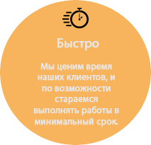
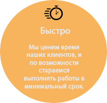
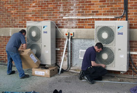
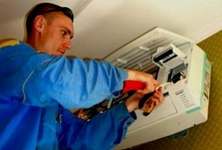
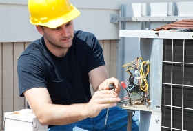
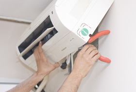
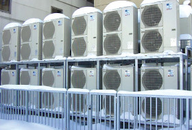

Установка кондиционеров в Донецке и Донецкой области
 
 


- 
- 
- 
- 
- 
Стандартный монтаж кондиционера включает в себя:
- Установку внутреннего блока
- Пробивку отверстия толщиной до 800 мм
- Прокладку трубопроводов длиной до 4 м
- Установку наружного блока под окном
- Развальцовку медных трубопроводов
- Вакумирование и запуск хладогента в систему
- Транспортные расходы в черте города
- Продолжительность монтажных работ составляет около 3-х часов